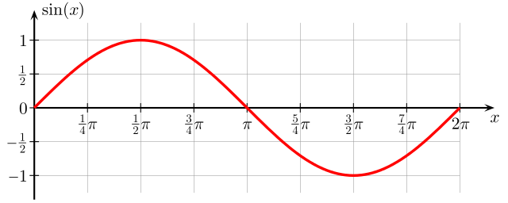

TP1-REDO-02 : Le son
Contents

TP1-REDO-02 : Le son#
Objectifs pédagogique#
Comprendre ce qu’est un son, une onde
appliquer la représentation de l’information numérique au son : échantillonnage, quantification et encodage
Introduction#
from IPython.display import YouTubeVideo
YouTubeVideo('5QM7HEPQ5uY', width=960, height=540)
Définition : le son#
Le son est la vibration d’un fluide et qui se propage sous la forme d’onde longitudinales grâce à la déformation du fluide.
Définition : une onde#
Une onde est dite périodique si la perturbation qui se propage se répète à intervalles de temps égaux
Périodicité temporelle#
période notée \(T\) : c’est la durée la plus courte au bout de laquelle un point se retrouve dans le même état vibratoire. Elle se mesure en seconde.
fréquence notée \(f\): c’est l’inverse de la période et mesurée en Herz : \(f = \frac{1}{T}\).
1 Herz = 1 / 1 secondecélérité notée \(v\) : c’est la vitesse à laquelle se propage un son. C’est le rapport entre la distance parcourue et le temps. Elle dépend fortement du milieu physique du fluide. Elle se mesure en mètres par seconde
Périodicité spatiale#
longeur d’onde notée \(\lambda\) est la distance la plus courte qui sépare deux points dans le même état vibratoire à un instant \(t\)
Lien entre périodicités spatiale et temporelle.#
La période temporelle \(T\) et la longueur d’onde \(\lambda\) sont liées par la relation
Intensité sonore#
L’intensité d’une onde sonore correspond à la quantité d’énergie transportée par cette onde, par unité de surface et par unité de temps. On la mesure en \(\frac{W}{m^{2}}\) (Watts par mètres carrés).
On mesure le niveau sonore en Décibels qui est une relation à l’intensité.

Exercice 1#
Sur la base du film C’est pas sorcier, quelle est la vitesse du son dans l’air ? Et dans le verre ?
Avec la petite expérience de Jammy sur le nombre de radios nécessaires pour réduire l’intensité sonore, indiquez dans une feuille excel ou sur une feuille de papier la relation fonctionnelle
Définition : représentation analogique#
Selon le Petit Robert: qui représente une information par un rapport proportionnel et continu entre l’information initiale et sa représentation (opposé à numérique).. A numérique on peut aussi parler de discret
Ainsi, un signal continu à temps continu est un signal analogique.
Un son est un signal analogique
Finitude des ordinateurs#
Un ordinateur ne comprend que des 1 et des 0 sur un nombre fixe d’octets (aujourd’hui, un mot-mémoire est codé sur 64 bits ou 8 octets. Cela signifie qu’un ordinateur stocke uniquement des signaux discrets
Représentation numérique du son#
Pour pouvoir représenter un son avec des 1 et des 0, il faut convertir le son en valeurs numériques.
Echantillonner le signal analogique : relever la valeur de l’onde à intervalle régulier
Quantifier les valeurs échantillonnées : donner une valeur numérique à la valeur échantillonnée. Cela revient à déterminer le nombre de valeurs que peut prendre cet échantillon.
Encoder l’échantillon quantifié : ajouter une transformation numérique au son pour qu’il respecte un format de son numérique donné (comme MP3, FLAC, OGG ou AC3)
from IPython.display import YouTubeVideo
YouTubeVideo('vmRoXLXB7xc', width=960, height=540)
Conversion analogique -> numérique et numérique -> analogique#
La chaîne de conversion peut être représentée par le shéma suivant ;

source : A Perez-Mas
Ce TP se déroule dans le cadre du traitement numérique de l’information.
Exercice 2 : Echantillonnage manuel#
Nous allons utiliser le logiciel Excel pour cet exercice
Ouvrez le logiciel Excel
Téléchrgez la feuille Excel de l’exercice
Cette feuille Excel contient 3 colonnes :
Une valeur temporelle
Une amplitude d’onde
Une valeur d’échantillonnage
ainsi qu’un graphique valeur-amplitude-échantillon
Choisissez une valeur d’amplitude sur 10, sur 5, sur 2 et observez la courbe rouge
Quelle est le nombre minimum d’échantillon faut-il choisir pour épouser la fonction ?
Exercice 3 : Quantification manuelle#
Sur la même feuille Excel, calculer la quantification en faisant varier le nombre de bits
En E2 vous pouvez choisir le nombre de bits de quantification
Recopiez la fonction de quantification en
D2:=QUOTIENT(C2,1/$F$1)/$F$1(cette fonction calcule le reste de la division entière de la valeur échantillonnée avec la valeur du nombre de bits en décimal et normalise le tout
Répondez aux questions suivantes :
Le graphique de quantification représente-t-il correctement le signal échantillonné ?
Y a-t-il un rapport entre la fréquence d’échantillonnage et les valeurs de quantification ?
Le logiciel Audacity#
Nous allons utiliser le logiciel open source (à sources ouvertes) Audacity qui va nous permettre de voir un son. Audacity peut se télécharger et s’installer gratuitement sur toutes les plateformes (MacOS, Linux, Windows).
Audacity est capable de :
enregistrer des sons numériquement
éditer des sons numériques dans les principaux formats son (mp3, wav, aiff, flac, ac3 et ogg)
améliorer, modifier, retoucher des sons avec une bibliothèque d’outils
utiliser la plupart des filtres numériques professionnels (réduction de bruit, suppression de fréquences, etc..)
Voici un manuel en français du logiciel
Si vous désirez l’installer chez vous : vous pouvez télécharger Audacity sur le site officiel.
Prise en main du logiciel Audacity (dirigé)#
Afin de mener à bien ce TP, vous devez brancher un casque audio sur votre ordinateur. Celui-ci vous est fourni par l’enseignant.
Ouvrir le logiciel Audacity
Comprendre les différents outils à disposition :
Jouer, pause, stop
sélectionner, couper, coller
Zoom sur la piste, zoom sur une sélection
Outil sur les pistes (Mixer, rééchantillonner)
Génération de sons : Tonalités carrée, sinusoïdales, en dents-de-scie
Outils d’effets et greffons
Observer l’échantillonnage d’un signal sinusoïdal généré#
La fonction sinus en mathématique est une fonction définie par \(f(x) = sin(x)\). C’est une fonction périodique qui peut être utilisée pour représenter un son pur. Sa représentation graphique est la suivante :

Générer une tonalité (Générer -> Tonalité -> Sinusoïde -> Fréquence 440 Hz, Amplitude 0.8, durée 1 seconde
Zoomer sur une partie du signal avec les combinaisons de touches CTRL+1 (zoom avant), CTRL+2 (normal) et CTRL+3 (zoom arrière)
Quelle est la durée en secondes entre deux mesures ?
Exercice 3 : Rééchantillonnage#
A l’aide du logiciel Audacity, tester les différentes fréquences d’échantillonnage sur le son.
Téléchargez le fichier MP3 Derek Clegg
Ouvrez-le depuis Audacity
Rééchantillonnez les deux pistes à l’aide de l’outil “pistes -> rééchantillonner”
Testez des valeurs différentes (8000 Hz, 16000 Hz, 32000 HZ et 384000 Hz)
Répondez aux questions :
Quelles différences sur le son entendu ? Choisissez des mot représentatifs
Entendez-vous une différence au-delà de 15 KHz ? Pourquoi ?
Exercice 4 : Représentation de l’information#
A l’aide des outils de sélection, copie et collage,
sélectionnez une partie du morceau et doublez-le
Répondez aux questions :
Pourquoi cela fonctionne-t-il ? (indice : comment le son est-il représenté numériquement ?)
Exercice 5 : Encodage#
La Taille d’un fichier (non compressé) se calcule par la fonction suivante :
Où le débit binaire se calcule par:
où \(f\) est la fréquence d’échantillonnage, \(N\) le nombre de bits de quantification et \(c\) le nombre de canaux
Remplissez le tableau suivant :
fréquence d’échantillonnage \(f\) |
quantification \(N\) |
canaux \(c\) |
durée en minutes |
Taille en bits |
|---|---|---|---|---|
8000 |
8 |
1 |
5 |
|
8000 |
16 |
1 |
5 |
|
16000 |
8 |
1 |
5 |
|
16000 |
16 |
1 |
5 |
|
32000 |
8 |
1 |
5 |
|
32000 |
16 |
1 |
5 |
|
44000 |
8 |
1 |
5 |
|
44000 |
16 |
1 |
5 |
|
44000 |
16 |
2 |
5 |
|
384000 |
8 |
1 |
5 |
|
384000 |
16 |
1 |
5 |